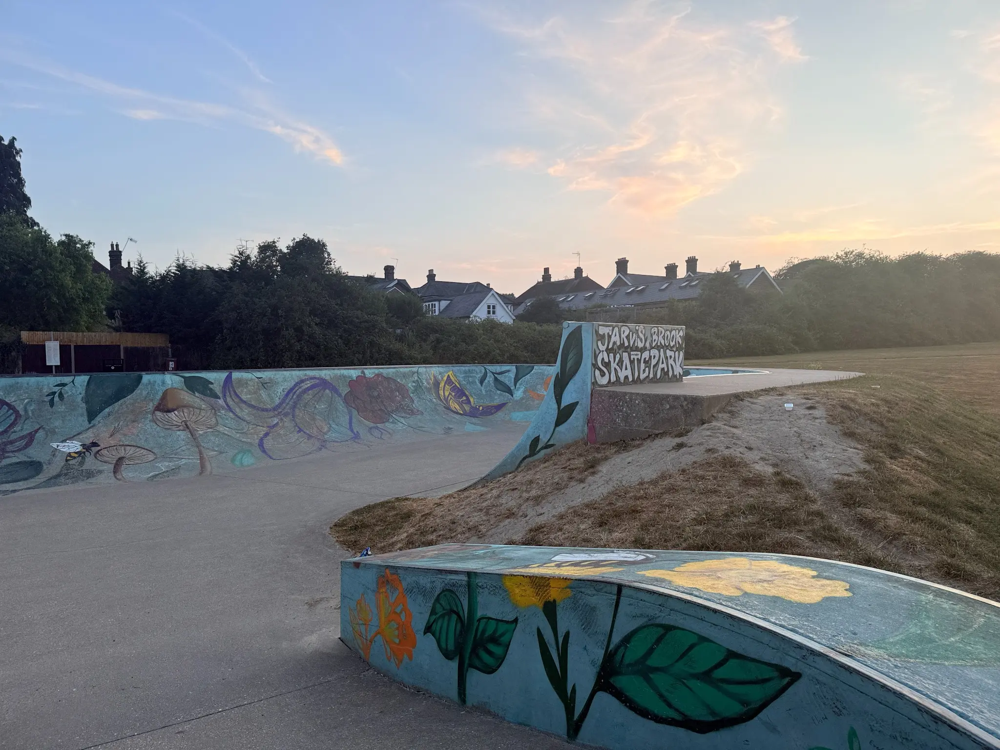
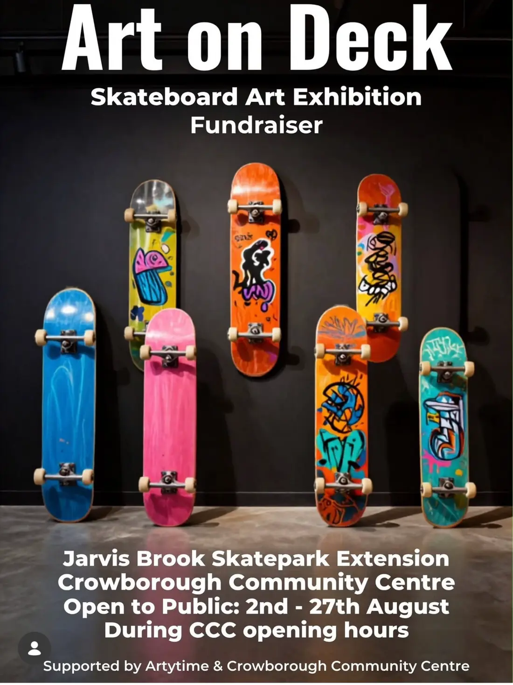
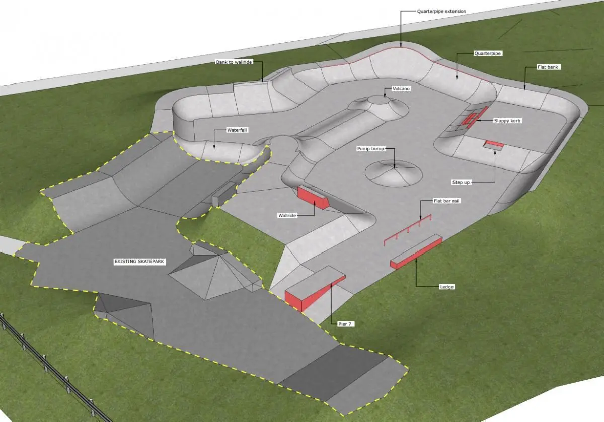
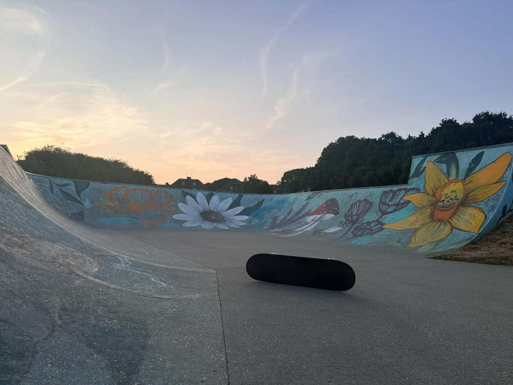
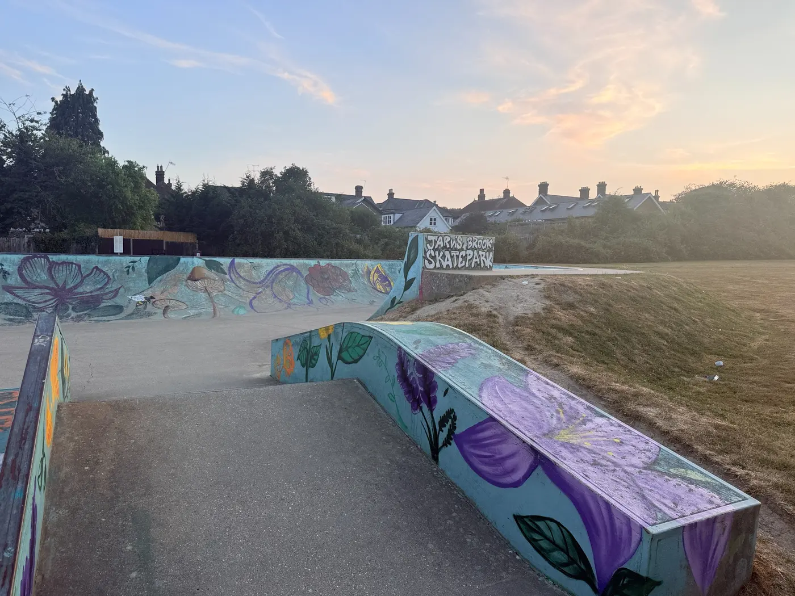
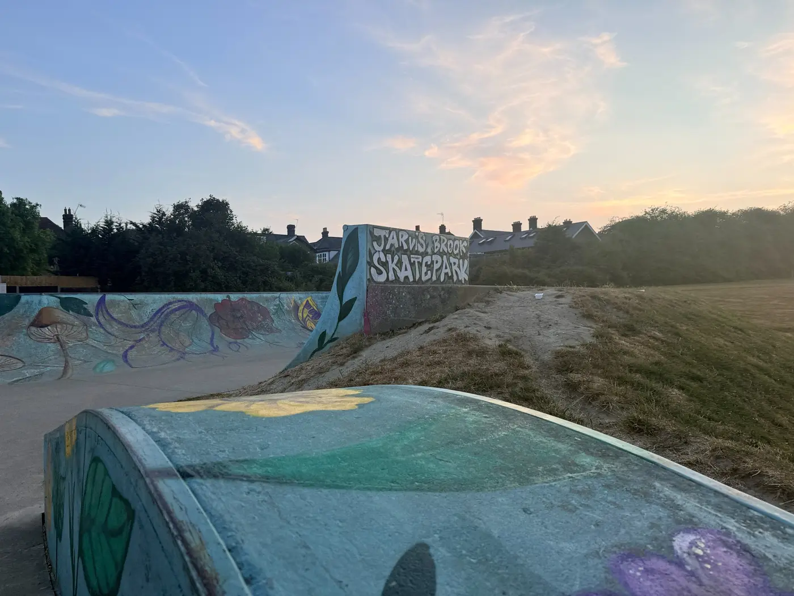

More space
A major extension to the existing park, with better flow and more ways to ride.

Crowborough, East Sussex
Help us extend Jarvis Brook Skatepark into a modern, inclusive place for our whole wheeled-sports community.

AUGUST 2026
Discover one-off skateboard artworks created by local artists and bid online to help fund the Jarvis Brook Skatepark extension.
The Art on Deck exhibition is at Crowborough Community Centre, with online bidding open throughout August.
Bid on the artworkWatch the campaign film
The park today
A quick sweep across the existing Jarvis Brook Skatepark—brightened by local artists, loved by its community and ready for its next chapter.
Why it matters
The existing skatepark is nearing the end of its life after years of erosion. Local riders have campaigned for a safer, more modern park that gives a growing community room to progress.
The approved extension would more than double the park’s size, adding professionally designed concrete features for all ages, abilities and wheeled sports.
A major extension to the existing park, with better flow and more ways to ride.
Created for skateboards, BMX, scooters, rollerblades and adaptive skating.
Clear sightlines, open meeting points and durable concrete construction.
The campaign journey
Young people, artists and community organisations have spent years building the case for a bigger, safer and more inclusive skatepark.
The plans are approved. Now we need to fund the build.
Local riders presented their campaign for an improved Jarvis Brook Skatepark to Crowborough Town Council.
A successful crowdfunding campaign paid for professional designs, surveys and the work needed to seek planning permission.
Wealden District Council approved plans to more than double the park’s size and create a modern facility for wheeled sports.
The build is estimated to cost £360,000. Once completed, Crowborough Town Council is expected to adopt and maintain the extended park.
Help bring this important free facility for young people in and around Crowborough to life.
The vision
The contemporary extension has been designed by professional skatepark designers to add flow, variety and progression while connecting naturally to the existing park.

From the park
Local artists and young people have already brought new life to the existing park. Now we want to secure its future.



Community support
Share the campaign, come to a fundraising event, offer your skills or help connect us with funding. Every conversation moves the park closer to becoming real.